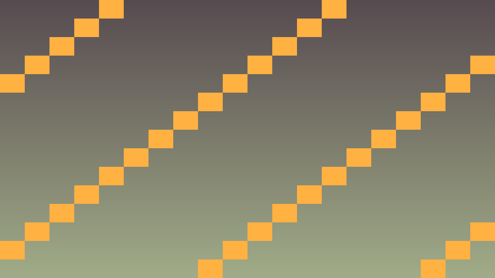
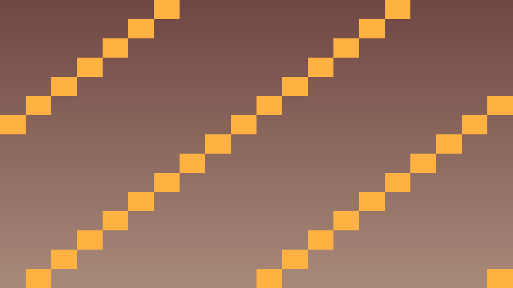

Tavs šīs stundas izaicinājums: Implementēt AI ar stāvokļu mašīnu (state machine) reālistiskai uzvedībai.
Priekšzināšanu robeža: uzdevumos izmanto tikai iepriekš apgūto un šīs lapas teorijas/koda piemēros parādīto. Ja parādās jauna komanda vai rīks, vispirms atrod tās paraugu teorijas blokā.
State machine (stāvokļu mašīna) ir AI dizaina paraugs, kur objekts vienlaikus ir vienā no diskrētiem stāvokļiem un pāriet starp tiem pēc noteikumiem.
enum class EnemyState {
IDLE, // gaida
PATROL, // staigā
CHASE, // dzenas
ATTACK, // uzbrūk
DEAD
};
class Enemy : public CharacterBody2D {
private:
EnemyState state = EnemyState::IDLE;
Vector2 patrol_target;
Player* player = nullptr;
public:
void _physics_process(double delta) override {
switch (state) {
case EnemyState::IDLE:
if (player_visible()) state = EnemyState::CHASE;
else if (idle_too_long()) state = EnemyState::PATROL;
break;
case EnemyState::PATROL:
move_to_patrol_target();
if (player_visible()) state = EnemyState::CHASE;
break;
case EnemyState::CHASE:
move_toward(player->get_position());
if (in_attack_range()) state = EnemyState::ATTACK;
else if (!player_visible()) state = EnemyState::IDLE;
break;
case EnemyState::ATTACK:
attack_player();
if (!in_attack_range()) state = EnemyState::CHASE;
break;
}
}
};Kritiskais fokuss: šajā stundā nepietiek tikai panākt redzamu efektu editorā. Jāspēj paskaidrot, kura C++ klase glabā stāvokli, kura metode to maina un kā Godot node struktūra šo kodu izmanto.
Pārbaudes pierādījums: C++ kodā pamatoti izvēlēti vector/map/set, AI stāvokļi ir skaidri, un sarežģītākas sistēmas var profilēt vai atkļūdot.
#include <godot_cpp/variant/string.hpp>
using namespace godot;
struct AiDataCheckpoint {
String lesson = "4.3 State machines AI uzvedībai";
bool uses_cpp = true;
bool chooses_container = true;
bool separates_ai_state = true;
bool handles_removal_safely = true;
};Atpazīsti šīs stundas galveno ideju un sasaisti to ar gala projektu Top-down šautene.
.hpp, .cpp vai Godot scēnas failā, nevis uzreiz lielu funkciju.klases_punkti, zvana_taimeris, pazudusais_markieris vai kafijas_pauze; mazliet humora drīkst, bet kodam jāpaliek skaidram.Izmanto šīs stundas prasmi nelielā, strādājošā projekta daļā.
.hpp, .cpp vai Godot scēnas failā, izmantojot teorijas piemēru kā sākumpunktu.Pārbaudi risinājumu, salīdzini rezultātus un atrodi, ko uzlabot.
Pievieno nelielu radošu uzlabojumu ar klases dzīves piemēru, nepārsniedzot apgūto vielu.


enum class EnemyState { IDLE, PATROL, CHASE, ATTACK, DEAD };
void Enemy::_physics_process(double delta) {
state_timer += delta;
switch (state) {
case EnemyState::IDLE:
if (player_in_vision) change_state(EnemyState::CHASE);
else if (state_timer > 3.0) change_state(EnemyState::PATROL);
break;
case EnemyState::PATROL: {
Vector2 dir = (patrol_target - get_position()).normalized();
velocity = dir * 100.0f;
move_and_slide();
if (get_position().distance_to(patrol_target) < 10) {
swap_patrol_target();
}
if (player_in_vision) change_state(EnemyState::CHASE);
} break;
case EnemyState::CHASE: {
Vector2 dir = (player_pos - get_position()).normalized();
velocity = dir * 200.0f;
move_and_slide();
if (get_position().distance_to(player_pos) < 50) {
change_state(EnemyState::ATTACK);
}
} break;
case EnemyState::ATTACK:
if (state_timer >= 1.0) {
player->take_damage(10);
state_timer = 0;
}
break;
}
}
void Enemy::change_state(EnemyState new_state) {
state = new_state;
state_timer = 0;
}